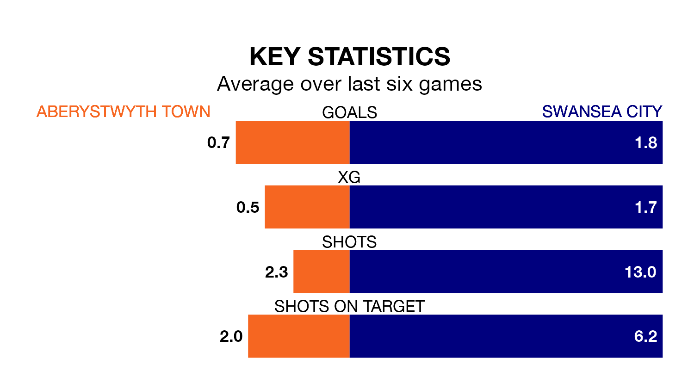

Relegation candidates Aberystwyth Town face a challenge against high-flying Swansea City at the Park Avenue Ground on Sunday.
Aberystwyth Town are seventh in the Welsh Premier Women's League table, and have picked up four wins and five draws in their 18 games to date.
The Swans, meanwhile, are second in the standings with 41 points, having won 13 and drawn two, and are five points behind table-toppers Cardiff City.
With 43 goals in 18 games so far this season, Swansea are the league's joint-second-highest scorers with 2.4 goals per game. And they are conceding fewer than average, letting in 20 goals at a rate of 1.1 per game.
Aberystwyth, meanwhile, are below average scorers, with 1.2 goals per game, compared to a league average of 1.8. They have conceded 1.8 goals per game.
Town are in terrible form in the Welsh Premier Women's League, with no wins and two draws from their last six games.
With four wins and a draw over that period, City's form is much better – they have taken 13 points from 18, compared to the hosts' two.
In the last 10 years, Aberystwyth and Swansea have played each other on 10 occasions. Swansea won five of them and they drew five times.
On average, Aberystwyth scored 0.8 goals and the Swans 2.8 in those matches.
Their last meeting was on February 4, when they played out a 1-1 draw.
Aberystwyth's last match was on March 31, a 3-0 loss against Wrexham Women.
Swansea beat Cardiff City 2-0 last time out, also on March 31.
Updated: 16:41 (UTC), 04/04/24